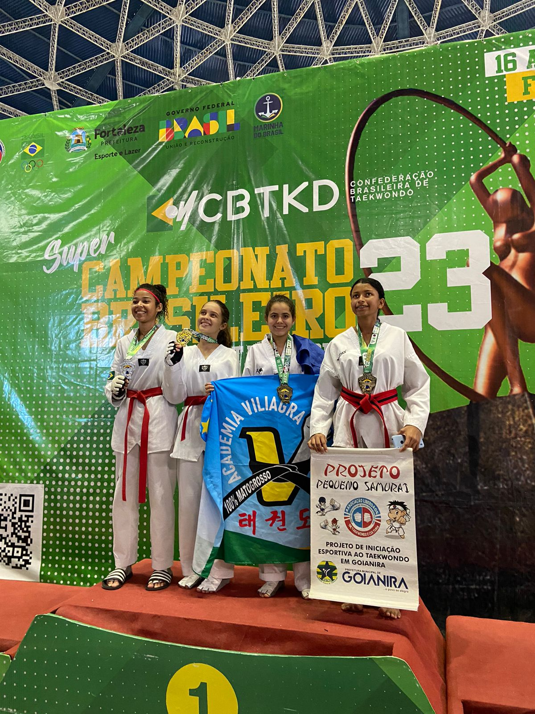

Comecei o Tekwondo aos 8 anos de idade. Fiz uma aula experimental por obrigação e depois nunca mais quis faltar
Em 2022 comecei a Competir serio no Taekwondo.
Ano passado eu topei em ir ao um campeonato:O Super Campeonato Brasileiro 2023
Eu estava determinada em ganhar, treinava todos os dias, não tinha folga.
A emoção de ter tornado a Primeira Vilhenense a ganhar um Ouro em Brasileiro de taekwondo.
Na copa Do Brasil lutei pela primeira vez com a Faixa preta. Depois de 8 anos finalmente ela veio. A grandiosa faixa Preta.
O taekwondo me deu muitas oportunidades, sendo elas: amizades novas, medalhas, lugares.
Já tive oportunidades de ir para: Cacoal, Jipa, Porto Velho, Fortaleza, Rio de Janeiro e Brasília
